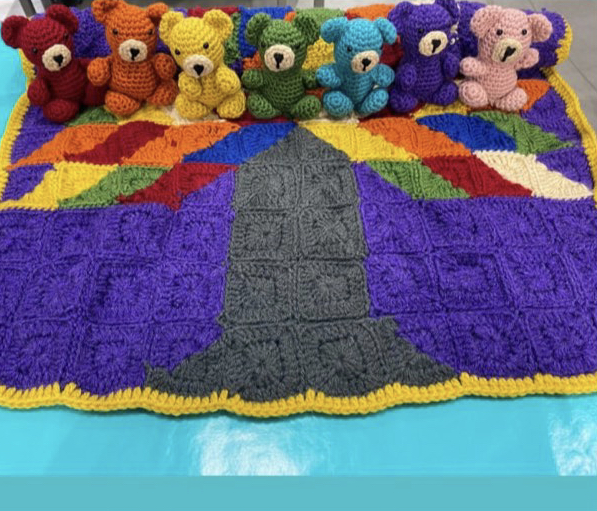

PLUCKY: Having or showing determined courage in the face of difficulties.
I am a Canadian whose parents are from Ghana. I have lived in Connecticut, Ohio, Massachusetts, and studied abroad in Paris for a semester. I have degrees in Psychology and Public Health but I am hoping to become a Software Engineer to continue enacting real social change.
